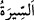
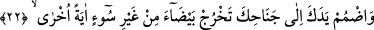

denilirse, şöyle cevap veririz: Çünkü Halil (a.s.)’ın temkin hâli daha kuvvetliydi.
Bidâyet (başlangıç) hâli ile nihâyet hali arasında fark vardır. Allah Teâlâ “Korkma”
buyurarak Mûsâ (a.s.)’ın bu korkusunu giderdi. Böylece asâyı tekrar eline alması
mümkün oldu. Böylece o da Hz. İbrahim gibi temkîn ehli oldu.
Görmez misin ki Peygamberimiz (a.s.)’a Cebrâil ilk defa geldiğinde ondan korkmuş
ve dağdan titreyerek geri dönmüştür. Sonra O’nunla ilgili olanlar olmuş, nihâyet mi‘rac
gecesinde Cebrâil (a.s.)’ı aslî sûretinde görmeye güç yetirmiştir. Nitekim Allah Teâlâ:
“Andolsun onu, sidretü-l-müntehânın yanında önceden bir defa daha görmüştü.”
(en-Necm, 53/13-14) buyurmuştur.
et-Te’vîlâtü’n-Necmiyye’de şöyle der: “Al onu! Korkma!” yâni sen başlangıçta asâda
birçok faydanın ve ona ihtiyâcının olduğunu düşünüyordun. Sonra onu yılan halinde
görünce korktun, zararından çekindin. Onu al, korkma. Fayda ve zararı verenin yalnız
Allah Teâlâ olduğunu bil. Korkun ve ümidin O’ndan ve O’na olsun, başkasına değil.
Mesnevî’de şöyle der:
Bir kişi Hak’tan korkup takva yolunu tuttu mu,
Cin olsun, insan olsun, onu kim görse korkar.
“Biz onu şimdi ilk hâline döndüreceğiz.” “
” seyr (yürümek) kelimesinden gelip
onun bir çeşididir. Yol ve şekil mânâsına da kullanmak mümkündür. Buna göre cümlenin
anlamı şöyledir: ‘Sen onu eline tekrar alınca biz onu eski hâline, yani asâ şekline tekrar
döndüreceğiz.’ Mûsâ (a.s.) elini yılanın ağzına koydu ve yılan daha önce olduğu gibi asâ
oldu ve Hz. Mûsâ elini asânın daha önce dayanırken tuttuğu çatalında buldu. Mûsâ (a.s.)
Fir’avn’un yanında asâ yılana dönüştüğünde korkmasın diye Allah bu mûcizeyi ona
önceden göstermiştir.
Hadîste: “Zekâtı verilmeyen mâl (kıyâmette) sâhibine kocaman bir yılân sûretinde
getirilir.”[69] buyrulmuştur. Fakir (Bursevî) der ki: “Ma‘rifet ehline göre mânevî bile
olsa her bedenin rûhu vardır. Her amelin, her huyun ve sıfatın dünyâda mûtedil bir şekli
vardır. Bu sûret âhirette gözle görülür hâle gelir. Nitekim Allah Teâlâ “Artık O ne
yaptıklarını kendilerine bildirecektir.” (el-En‘âm, 6/108) buyurmuştur. Yani daha
önce En‘âm sûresinde geçtiği üzere Allah Teâlâ onlara amellerinin sûretlerini gösterir.
Mal sevgisi, zararlı büyük bir yılan sûretinde olan nefs-i emmârenin sıfatlarının en
kuvvetlilerinden olduğu için sırların ortaya döküldüğü günde elbette bu rahatsız edici
sûrette zâhir olacak ve sâhibinin boynuna dolanacaktır. Kalb Mûsâ’sı mal sevgisinden
temizlenir, malı Allah yolunda harcamayı severse, yaptığı hayırlı amellere uygun olarak
arzu ettiği güzel bir sûrette karşısına çıkar. Diğerlerinin durumunu da buna kıyas et.